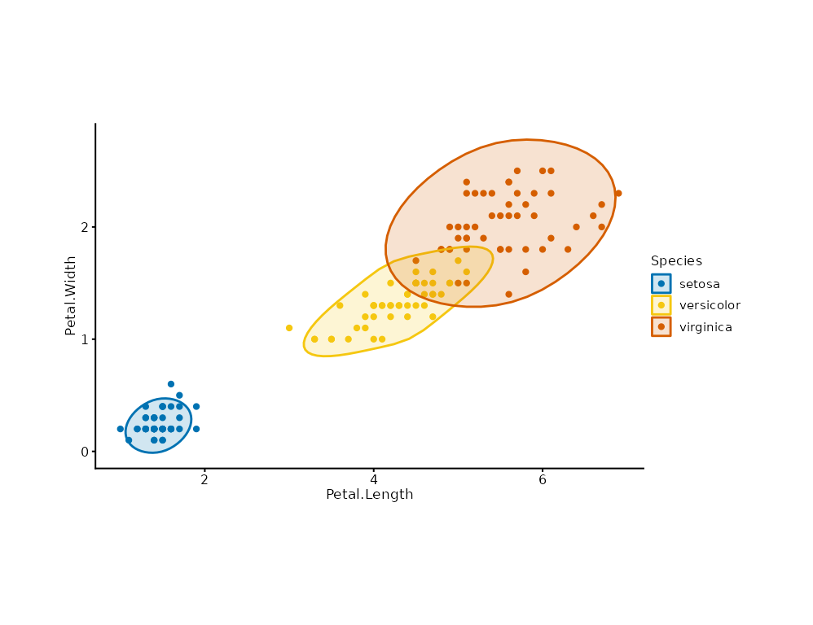

Draws a smooth envelope around the clusters of a scatter plot, one per
group: the annotation sibling of mark_point() (ggforce's
geom_mark_hull / geom_mark_ellipse in simplified, dependency-free
form). This is a syntax-sugar composite mark.
Usage
mark_encircle(
plot,
mapping = NULL,
data = NULL,
position = NULL,
...,
shape = c("hull", "ellipse"),
expand = 0.05,
radius = 0.05,
alpha = NULL,
rasterize = FALSE,
rasterize_dpi = 300,
rasterize_dev = "cairo"
)Arguments
- plot
A plotit object
- mapping
Optional aesthetics:
x,yplus an optional discrete channel (colour/fill/group) giving one envelope per level- data
Optional data for this layer
- position
Position adjustment.
- ...
Other arguments passed to the underlying
geom_polygon(fill,colour,linewidthdefault to the primary token, the faint neutral, and the thin stroke).- shape
"hull"(convex hull) or"ellipse"(t-based data ellipse,stat_ellipseengine at 0.95 level)- expand
Proportional outward dilation of the envelope (default 0.05 = 5% of each vertex's distance from the envelope centroid; approximates ggforce's npc expansion).
0keeps the raw hull.- radius
Corner-rounding strength (default 0.05): one Chaikin round per 0.05 smooths the hull corners;
0keeps sharp corners. Simplified counterpart of ggforce'sconcavity.- alpha
Envelope fill opacity;
NULL(default) uses the annotation tokenalpha_annot(0.18).- rasterize
If
TRUE, rasterize viaggrastr::rasterise().- rasterize_dpi
DPI for rasterization (default 300).
- rasterize_dev
Graphics device for rasterization (default
"cairo").
Details
Equivalent expansion:
shape = "hull" is grDevices::chull() vertices per group, dilated
outward by `expand`, rounded by `radius`, then
mark_polygon(fill = primary, colour = faint)
shape = "ellipse" is ggplot2::stat_ellipse() per group, dilated the
same way, then mark_polygon()
ggforce's label and arrow decorations are not part of this layer;
annotate groups with mark_text() / mark_label() instead.
References
ggforce: geom_mark_hull / geom_mark_ellipse
R: grDevices::chull() (convex hull) / ggplot2 stat_ellipse()
Examples
plotit(iris, encode(x = Petal.Length, y = Petal.Width, colour = Species)) |>
mark_point() |>
mark_encircle(shape = "ellipse")
